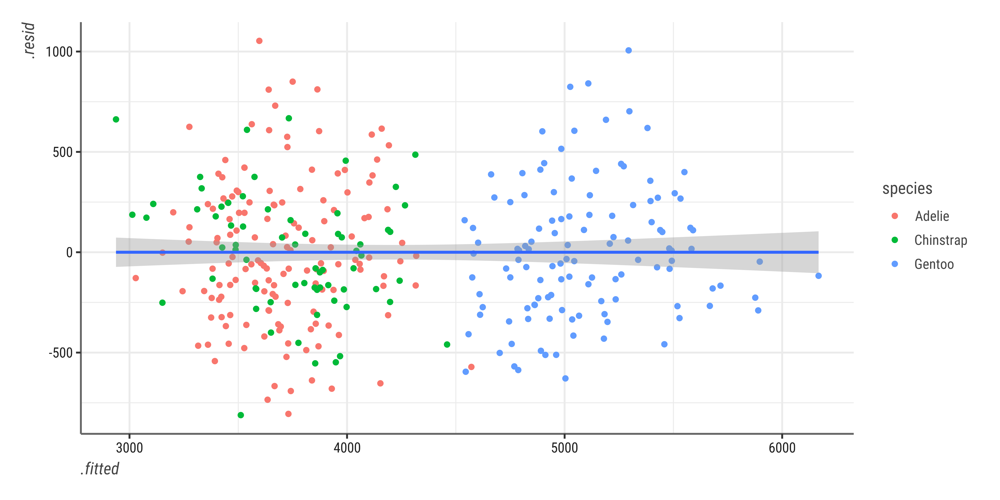
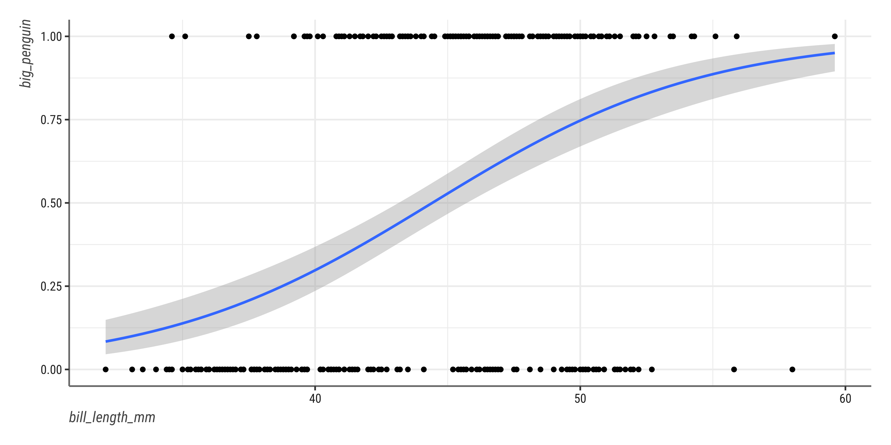
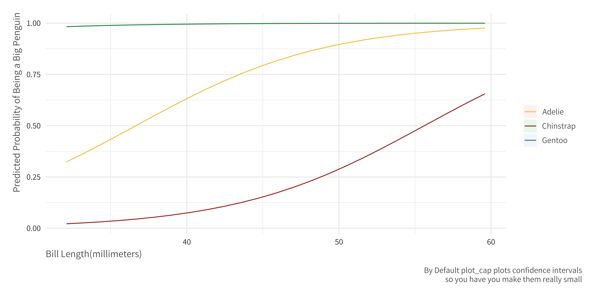

Data Analysis in R
Josh Allen
Department of Political Science at Georgia State University
2022-08-29
Packages You Will Need
- Note you will see some version of
theme_allenused- This is just set a set of modifications based on Kyle Butt’s personal theme, mainly the fonts
- If you really like it I can include the underlying file in an email.
Exploratory Data Analysis in R
Describing Variables
This depends on what kind of variable it is i.e. continuous, categorical etc
It also depends on what story you need to tell
- Is this confounder a big deal?
- Do we see anticipation of treatment?
- Are there any outliers?
- etc?
Remember R is just a toolbox.
First Cut
species island bill_length_mm bill_depth_mm
Adelie :152 Biscoe :168 Min. :32.10 Min. :13.10
Chinstrap: 68 Dream :124 1st Qu.:39.23 1st Qu.:15.60
Gentoo :124 Torgersen: 52 Median :44.45 Median :17.30
Mean :43.92 Mean :17.15
3rd Qu.:48.50 3rd Qu.:18.70
Max. :59.60 Max. :21.50
NA's :2 NA's :2
flipper_length_mm body_mass_g sex year
Min. :172.0 Min. :2700 female:165 Min. :2007
1st Qu.:190.0 1st Qu.:3550 male :168 1st Qu.:2007
Median :197.0 Median :4050 NA's : 11 Median :2008
Mean :200.9 Mean :4202 Mean :2008
3rd Qu.:213.0 3rd Qu.:4750 3rd Qu.:2009
Max. :231.0 Max. :6300 Max. :2009
NA's :2 NA's :2 Summary with a bigger data frame
studyName Sample Number Species Region
Length:344 Min. : 1.00 Length:344 Length:344
Class :character 1st Qu.: 29.00 Class :character Class :character
Mode :character Median : 58.00 Mode :character Mode :character
Mean : 63.15
3rd Qu.: 95.25
Max. :152.00
Island Stage Individual ID Clutch Completion
Length:344 Length:344 Length:344 Length:344
Class :character Class :character Class :character Class :character
Mode :character Mode :character Mode :character Mode :character
Date Egg Culmen Length (mm) Culmen Depth (mm) Flipper Length (mm)
Min. :2007-11-09 Min. :32.10 Min. :13.10 Min. :172.0
1st Qu.:2007-11-28 1st Qu.:39.23 1st Qu.:15.60 1st Qu.:190.0
Median :2008-11-09 Median :44.45 Median :17.30 Median :197.0
Mean :2008-11-27 Mean :43.92 Mean :17.15 Mean :200.9
3rd Qu.:2009-11-16 3rd Qu.:48.50 3rd Qu.:18.70 3rd Qu.:213.0
Max. :2009-12-01 Max. :59.60 Max. :21.50 Max. :231.0
NA's :2 NA's :2 NA's :2
Body Mass (g) Sex Delta 15 N (o/oo) Delta 13 C (o/oo)
Min. :2700 Length:344 Min. : 7.632 Min. :-27.02
1st Qu.:3550 Class :character 1st Qu.: 8.300 1st Qu.:-26.32
Median :4050 Mode :character Median : 8.652 Median :-25.83
Mean :4202 Mean : 8.733 Mean :-25.69
3rd Qu.:4750 3rd Qu.: 9.172 3rd Qu.:-25.06
Max. :6300 Max. :10.025 Max. :-23.79
NA's :2 NA's :14 NA's :13
Comments
Length:344
Class :character
Mode :character
Getting Some Descriptive Statistics
The Mean
Quartiles
T-tests
Base R
Welch Two Sample t-test
data: flipper_length_mm by gentoo
t = -32.47, df = 263.2, p-value < 2.2e-16
alternative hypothesis: true difference in means between group FALSE and group TRUE is not equal to 0
95 percent confidence interval:
-26.84983 -23.77964
sample estimates:
mean in group FALSE mean in group TRUE
191.9206 217.2353 Tidyverse
Welch Two Sample t-test
data: flipper_length_mm by gentoo
t = -32.47, df = 263.2, p-value < 2.2e-16
alternative hypothesis: true difference in means between group FALSE and group TRUE is not equal to 0
95 percent confidence interval:
-26.84983 -23.77964
sample estimates:
mean in group FALSE mean in group TRUE
191.9206 217.2353 Correlations
Base
| bill_length_mm | bill_depth_mm | |
|---|---|---|
| bill_length_mm | 1.0000000 | -0.2350529 |
| bill_depth_mm | -0.2350529 | 1.0000000 |
It is Also Important to plot your data!

Some Basic Graphs
ggplot(penguins, aes(x = bill_length_mm ,
y = body_mass_g,
color = species,
group = species)) +
geom_point() +
geom_smooth(method = "lm") +
labs(x = "Bill Length(milimeters)",
y = "Body mass(grams)") +
guides(color = guide_legend(title = "Species",
override.aes = list(fill = NA))) +
theme_allen_bw()
Some Basic Graphs Cont
ggplot(penguins, aes(x = bill_depth_mm, y = body_mass_g)) +
geom_point(aes(color = species)) +
geom_smooth(aes(color = species), method = "lm") +
geom_smooth(method = "lm") +
labs(x = "Bill Length(milimeters)", y = "Body mass(grams)") +
guides(color = guide_legend(title = "Species",
override.aes = list(fill = NA))) +
theme_allen_bw()Distributions

Distributions(cont)
User Written Extensions
library(gghalves)
ggplot(penguins, aes(x = species, y = bill_depth_mm, fill = species)) +
geom_boxplot(
width = .2, fill = "white",
size = 1.5, outlier.shape = NA
) +
ggdist::stat_halfeye(
adjust = .33,
width = .67,
color = NA,
position = position_nudge(x = .15)
) +
gghalves::geom_half_point(
side = "l",
range_scale = .3,
alpha = .25, size = 1
) +
MetBrewer::scale_fill_met_d(name = "Veronese") +
labs(x = NULL, fill = "Species", y = "Bill Depth(milimeters)") +
coord_flip() +
theme_allen_bw()
Generating Table 1
penguins = as.data.frame(penguins)
datasummary(All(penguins) ~ Mean + SD + Max + Min + Median + Histogram,
data = penguins, output = "html",
title = "Descriptive Statistics") | Mean | SD | Max | Min | Median | Histogram | |
|---|---|---|---|---|---|---|
| bill_length_mm | 43.92 | 5.46 | 59.60 | 32.10 | 44.45 | â–▅▆▆▆▇▇▂■|
| bill_depth_mm | 17.15 | 1.97 | 21.50 | 13.10 | 17.30 | ▃▄▄▄▇▆▇▅▂■|
| flipper_length_mm | 200.92 | 14.06 | 231 | 172 | 197.00 | ▂▅▇▄▁▄▄▂▁ |
| body_mass_g | 4201.75 | 801.95 | 6300 | 2700 | 4050.00 | â–▄▇▅▄▄▃▃▂■|
| year | 2008.03 | 0.82 | 2009 | 2007 | 2008.00 | ▆▇▇ |
Generating a Balance Table
FALSE (N=214) |
TRUE (N=119) |
||||||
|---|---|---|---|---|---|---|---|
| Mean | Std. Dev. | Mean | Std. Dev. | Diff. in Means | Std. Error | ||
| bill_length_mm | 42.0 | 5.5 | 47.6 | 3.1 | 5.6 | 0.5 | |
| bill_depth_mm | 18.4 | 1.2 | 15.0 | 1.0 | -3.4 | 0.1 | |
| flipper_length_mm | 191.9 | 7.2 | 217.2 | 6.6 | 25.3 | 0.8 | |
| body_mass_g | 3714.7 | 435.7 | 5092.4 | 501.5 | 1377.7 | 54.8 | |
| year | 2008.0 | 0.8 | 2008.1 | 0.8 | 0.0 | 0.1 | |
| N | Pct. | N | Pct. | ||||
| species | Adelie | 146 | 68.2 | 0 | 0.0 | ||
| Chinstrap | 68 | 31.8 | 0 | 0.0 | |||
| Gentoo | 0 | 0.0 | 119 | 100.0 | |||
| island | Biscoe | 44 | 20.6 | 119 | 100.0 | ||
| Dream | 123 | 57.5 | 0 | 0.0 | |||
| Torgersen | 47 | 22.0 | 0 | 0.0 | |||
| sex | female | 107 | 50.0 | 58 | 48.7 | ||
| male | 107 | 50.0 | 61 | 51.3 | |||
Linear Regression in R
Some Basics
- For
lmand other models we use this general form
model_one = estimator(outcome ~ iv1 + iv2 + ..., data = df)
- If you want to include all the variables in your data set than you can do that with
.
model_one = estimator(outcome ~ ., data = df)
- Remember R can hold lots of datasets so we have to be explicit with where the data is coming from
- note that we have several different datasets named
penguins_blah - making sure you have kept track of the using dataset is important
- note that we have several different datasets named
Univariate Regression
Call:
lm(formula = body_mass_g ~ bill_length_mm, data = penguins)
Residuals:
Min 1Q Median 3Q Max
-1762.08 -446.98 32.59 462.31 1636.86
Coefficients:
Estimate Std. Error t value Pr(>|t|)
(Intercept) 362.307 283.345 1.279 0.202
bill_length_mm 87.415 6.402 13.654 <2e-16 ***
---
Signif. codes: 0 '***' 0.001 '**' 0.01 '*' 0.05 '.' 0.1 ' ' 1
Residual standard error: 645.4 on 340 degrees of freedom
(2 observations deleted due to missingness)
Multiple R-squared: 0.3542, Adjusted R-squared: 0.3523
F-statistic: 186.4 on 1 and 340 DF, p-value: < 2.2e-16Multiple Regression
peng_adjust = lm(body_mass_g ~ bill_length_mm + flipper_length_mm + species, data = penguins)
summary(peng_adjust)
Call:
lm(formula = body_mass_g ~ bill_length_mm + flipper_length_mm +
species, data = penguins)
Residuals:
Min 1Q Median 3Q Max
-808.83 -230.35 -26.16 223.18 1050.37
Coefficients:
Estimate Std. Error t value Pr(>|t|)
(Intercept) -3904.387 529.257 -7.377 1.27e-12 ***
bill_length_mm 61.736 7.126 8.664 < 2e-16 ***
flipper_length_mm 27.429 3.176 8.638 2.34e-16 ***
speciesChinstrap -748.562 81.534 -9.181 < 2e-16 ***
speciesGentoo 90.435 88.647 1.020 0.308
---
Signif. codes: 0 '***' 0.001 '**' 0.01 '*' 0.05 '.' 0.1 ' ' 1
Residual standard error: 340.1 on 337 degrees of freedom
(2 observations deleted due to missingness)
Multiple R-squared: 0.8222, Adjusted R-squared: 0.8201
F-statistic: 389.7 on 4 and 337 DF, p-value: < 2.2e-16Getting Diagnostic Statistics
Base R
peng_adjust = lm(body_mass_g ~ bill_length_mm + flipper_length_mm + species,
data = peng_sans_miss_base)
## remember you need to open the train car door or it will return a listy thing
peng_sans_miss_base$.fitted_vals_brack = peng_adjust[[5]]
peng_sans_miss_base$.fitted_vals_dollar = peng_adjust$fitted.values
peng_sans_miss_base$.predicted_vals = predict(peng_adjust, interval = "prediction")
peng_sans_miss_base$.residuals_vals = peng_adjust$residuals
peng_sans_miss_base$.studentized_resids = rstudent(peng_adjust)
peng_sans_miss_base$.cooks_distance = cooks.distance(peng_adjust)Plotting
Base


Checking for Normality


Base R diagnostic plots

User Extensions
set.seed(1994) ## Shuffle these the same way every time
shuffled_residuals = lineup(null_lm(body_mass_g ~ bill_length_mm + flipper_length_mm + species,
method = "rotate"),
true = peng_diag_tidy,
n = 9)
#### decrypt("CLg7 X161 sO bJws6sJO vv")
ggplot(shuffled_residuals, aes(x = .fitted, y = .resid)) +
geom_point() +
facet_wrap(vars(.sample))
Tests
| statistic | p.value | parameter | method |
|---|---|---|---|
| 3.678191 | 0.4513059 | 4 | studentized Breusch-Pagan test |
| statistic | p.value | parameter | method |
|---|---|---|---|
| 8.776406 | 0.0030515 | 1 | Breusch-Godfrey test for serial correlation of order up to 1 |
Fixing Our Standard Errors
We can do this “on the fly†in R
There are ways to do this in the model formula with various packages
- But it is better to do this “on the fly”
Adjusting Our Standard Errors for Real This time
t test of coefficients:
Estimate Std. Error t value Pr(>|t|)
(Intercept) -3864.0732 507.3100 -7.6168 2.807e-13 ***
bill_length_mm 60.1173 6.5195 9.2212 < 2.2e-16 ***
flipper_length_mm 27.5443 3.0951 8.8993 < 2.2e-16 ***
speciesChinstrap -732.4167 76.3112 -9.5978 < 2.2e-16 ***
speciesGentoo 113.2542 89.2584 1.2688 0.2054
---
Signif. codes: 0 '***' 0.001 '**' 0.01 '*' 0.05 '.' 0.1 ' ' 1A Whole Host of Standard Errors
vc <- list(
"Standard" = vcov(peng_adjust),
"Sandwich (basic)" = sandwich(peng_adjust),
"Clustered" = vcovCL(peng_adjust, cluster = ~ species),
"Clustered (two-way)" = vcovCL(peng_adjust, cluster = ~ species + year),
"HC3" = vcovHC(peng_adjust),
"Andrews' kernel HAC" = kernHAC(peng_adjust),
"Newey-West" = NeweyWest(peng_adjust),
"Bootstrap" = vcovBS(peng_adjust),
"Bootstrap (clustered)" = vcovBS(peng_adjust, cluster = ~ species)
)
adjusted_models = lapply(vc, function(x) coeftest(peng_adjust, vcov = x))What does it look like

Making Table 2
- Model Summary is my favorite table making package
- if you run
modelsummary::supported_models()you will see it fits most needs - alternatively if you don’t want to read the list and fit your model than do
modelsummary::get_estimates(model_I_fitted)it will tell if the output is supported
- if you run
- Supports a variety of formats including word
se_info = tibble(term = "Standard errors","iid", "robust", "bootstrap", "stata", "clustered by sex")
modelsummary(peng_adjust,
stars = TRUE,
coef_omit = "(Intercept)|flipper_length_mm|.*species",
add_rows = se_info,
vcov = list("iid", "robust", "bootstrap", "stata", cluster = ~ sex ),
gof_map = c("nobs", "r.squared"))- As you can see it also lets you adjust your standard errors
- You can supply it one kind of standard error
- Or a List like I did
The Results
| Model 1 | Model 2 | Model 3 | Model 4 | Model 5 | |
|---|---|---|---|---|---|
| bill_length_mm | 60.117*** | 60.117*** | 60.117*** | 60.117*** | 60.117*** |
| (7.207) | (6.519) | (6.158) | (6.429) | (1.591) | |
| Num.Obs. | 333 | 333 | 333 | 333 | 333 |
| R2 | 0.824 | 0.824 | 0.824 | 0.824 | 0.824 |
| Standard errors | iid | robust | bootstrap | stata | clustered by sex |
| + p < 0.1, * p < 0.05, ** p < 0.01, *** p < 0.001 |
Interactions
To include a multiplicative term we can use
*,:or/The constitutive terms will appear automatically
In the case of
/it returns the marginal effect- As well as the correct standard errors and pvalues
pengs_interact_stand = lm(body_mass_g ~ bill_length_mm * sex + species + flipper_length_mm,
data = peng_sans_miss_tidy)
summary(pengs_interact_stand)
Call:
lm(formula = body_mass_g ~ bill_length_mm * sex + species + flipper_length_mm,
data = peng_sans_miss_tidy)
Residuals:
Min 1Q Median 3Q Max
-722.25 -189.89 -5.58 188.97 897.79
Coefficients:
Estimate Std. Error t value Pr(>|t|)
(Intercept) -1279.184 601.073 -2.128 0.034073 *
bill_length_mm 28.695 7.980 3.596 0.000374 ***
sexmale 1004.946 279.166 3.600 0.000368 ***
speciesChinstrap -302.268 81.331 -3.716 0.000238 ***
speciesGentoo 670.469 95.795 6.999 1.47e-11 ***
flipper_length_mm 19.052 2.954 6.449 4.06e-10 ***
bill_length_mm:sexmale -12.525 6.403 -1.956 0.051324 .
---
Signif. codes: 0 '***' 0.001 '**' 0.01 '*' 0.05 '.' 0.1 ' ' 1
Residual standard error: 290.7 on 326 degrees of freedom
Multiple R-squared: 0.872, Adjusted R-squared: 0.8697
F-statistic: 370.2 on 6 and 326 DF, p-value: < 2.2e-16Full Marginal Effects way
pengs_interact_marg = lm(body_mass_g ~ bill_length_mm / sex + flipper_length_mm + species, data = peng_sans_miss_tidy)
summary(pengs_interact_marg)
Call:
lm(formula = body_mass_g ~ bill_length_mm/sex + flipper_length_mm +
species, data = peng_sans_miss_tidy)
Residuals:
Min 1Q Median 3Q Max
-733.40 -188.22 -11.83 187.92 868.75
Coefficients:
Estimate Std. Error t value Pr(>|t|)
(Intercept) -491.606 569.987 -0.862 0.389052
bill_length_mm 17.813 7.520 2.369 0.018421 *
flipper_length_mm 17.354 2.969 5.845 1.23e-08 ***
speciesChinstrap -305.537 82.800 -3.690 0.000263 ***
speciesGentoo 706.682 96.992 7.286 2.41e-12 ***
bill_length_mm:sexmale 10.252 1.002 10.235 < 2e-16 ***
---
Signif. codes: 0 '***' 0.001 '**' 0.01 '*' 0.05 '.' 0.1 ' ' 1
Residual standard error: 296 on 327 degrees of freedom
Multiple R-squared: 0.8669, Adjusted R-squared: 0.8649
F-statistic: 426.1 on 5 and 327 DF, p-value: < 2.2e-16Tables with multiple models
modelsummary(list(peng_naive, peng_adjust, pengs_interact_marg),
stars = TRUE,
gof_omit = ".*", ## omitting all goodness of fit for space
coef_map = c("bill_length_mm" = "Bill Lenth(mm)",
"flipper_length_mm" = "Flipper Lenth(mm)",
"bill_length_mm x sexmale" = "Bill Length(mm) x Male Penguin"),
vcov = "robust",
note = "Robust Standard errors in Parenthsis")| Model 1 | Model 2 | Model 3 | |
|---|---|---|---|
| Bill Lenth(mm) | 87.415*** | 60.117*** | 17.813* |
| (6.898) | (6.519) | (6.970) | |
| Flipper Lenth(mm) | 27.544*** | 17.354*** | |
| (3.095) | (2.902) | ||
| + p < 0.1, * p < 0.05, ** p < 0.01, *** p < 0.001 | |||
| Robust Standard errors in Parenthsis |
Fixed Effects
Fixed Effects
library(plm)
## fixed effects option is model = "within"
microbenchmark(
euros_lfe = plm(Euros ~ log(dist_km) + Origin + Destination + Product + Year
, data = trade,
model = "within"),
times = 5)| expr | time |
|---|---|
| euros_lfe | 115122875 |
| euros_lfe | 109623463 |
| euros_lfe | 256540075 |
| euros_lfe | 104449960 |
| euros_lfe | 245386845 |
Generating Predictions
set.seed(1994)
penguins = mutate(penguins, id = row_number())
peng_train = penguins |>
drop_na() |>
sample_frac(0.7)
peng_train$data_set = "Train"
penguins_training_model = lm(body_mass_g ~ bill_length_mm, data = peng_train)
peng_predict_train = augment(penguins_training_model,
interval = "prediction",
newdata = peng_train) |>
select(contains("."), everything())all_together = rbind(peng_predict_train, peng_predict_test)
ggplot(all_together, aes(x = bill_length_mm,
y = body_mass_g,
color = data_set,
fill = data_set)) +
geom_point(alpha = 0.7) +
geom_line(aes(y = .fitted)) +
geom_ribbon(aes(ymin = .lower,
ymax = .upper),
alpha = 0.3,
col = NA) +
scale_color_discrete(name = "Training sample?",
aesthetics = c("color", "fill")) +
theme_allen_bw()
Maximum Likelihood Estimation
Machine Learning
R comes with a whole host of maximum likelihood estimators(MLE)
- As well as user written packages
You will also probably want to load
marginaleffectsto get marginal effects of your modelemmeansis also a solid package for getting marginal effectsNote: They do differ on what they can do and how they generate marginal effects
- Andrew Heiss has a nice summary of this at the bottom of this blog post
The data we are using
Lets See What this looks like

Our Model
base_model = glm(big_penguin ~ bill_length_mm + flipper_length_mm + species + female,
data = penguins_glm,
family = binomial(link = "logit"))
summary(base_model)
Call:
glm(formula = big_penguin ~ bill_length_mm + flipper_length_mm +
species + female, family = binomial(link = "logit"), data = penguins_glm)
Deviance Residuals:
Min 1Q Median 3Q Max
-2.5554 -0.1754 -0.0458 0.1525 3.3236
Coefficients:
Estimate Std. Error z value Pr(>|z|)
(Intercept) -28.21658 7.65713 -3.685 0.000229 ***
bill_length_mm 0.16149 0.10149 1.591 0.111593
flipper_length_mm 0.11095 0.03734 2.971 0.002966 **
speciesChinstrap -3.06047 1.16962 -2.617 0.008880 **
speciesGentoo 4.77533 1.71546 2.784 0.005374 **
femaleTRUE -3.30482 1.07008 -3.088 0.002013 **
---
Signif. codes: 0 '***' 0.001 '**' 0.01 '*' 0.05 '.' 0.1 ' ' 1
(Dispersion parameter for binomial family taken to be 1)
Null deviance: 461.27 on 332 degrees of freedom
Residual deviance: 147.40 on 327 degrees of freedom
AIC: 159.4
Number of Fisher Scoring iterations: 8Average Marginal Effects
User Specified Values
predictions_emmeans = base_model |>
emmeans(~ bill_length_mm + species, var = "bill_length_mm",
at = list(bill_length_mm = seq(0, 60,1)),
regrid = "response") |>
as_tibble()
colors_plot = c("##f0be3d", "##931e18", "##247d3f")
ggplot(predictions_emmeans, aes(x = bill_length_mm, y = prob, color = species)) +
geom_line() +
labs(x = "Bill Length(millimeters)", y = "Predicted Probablity of Being a Big Penguin",
color = NULL) +
theme(legend.position = "bottom") +
theme_allen_minimal() +
scale_color_manual(values = colors_plot)p = plot_cap(base_model, condition = c("bill_length_mm", "species"), conf_level = 0.01) ## can be saved and changed with ggplot options
p +
labs(x = "Bill Length(millimeters)", y = "Predicted Probablity of Being a Big Penguin",
color = NULL, fill = NULL,
caption = "By Default plot_cap plots confidence intervals \nso you have you make them really small") +
theme(legend.position = "bottom") +
theme_allen_minimal() +
scale_color_manual(values = colors_plot)Results


Machine Learning
Packages You Will Need
- Note caret and tidymodels have some namespace conflicts.
- I personally would prefer to load one or the other
- This is just a commitment to show you how to do things two ways
Creating Training and Test Sets
Caret
Create Bootstraps
Fit a Random Forest and Plot ROC
Caret
Tidymodels
Code
rf_spec = rand_forest() |>
set_mode("classification") |>
set_engine("ranger")
penguin_wf = workflow() |>
add_formula(sex ~ .)
rf_peng = penguin_wf |>
add_model(rf_spec) |>
fit_resamples(resample = peng_boots,
control = control_resamples(save_pred = TRUE))
rf_peng |>
collect_predictions() |>
group_by(id) |>
roc_curve(sex, .pred_female) |>
ggplot(aes(1 - specificity, sensitivity, color = id)) +
geom_abline(lty = 2, color = "gray80", size = 1.5) +
geom_path(show.legend = FALSE, alpha = 0.6, size = 1.2) +
coord_equal()